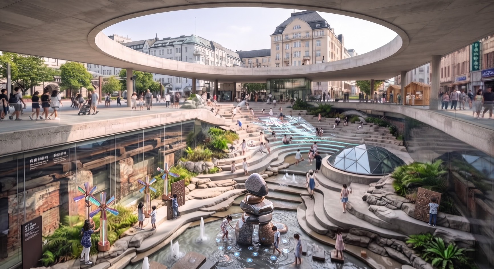
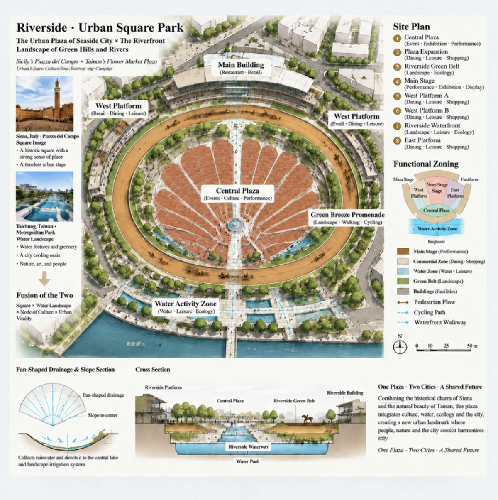
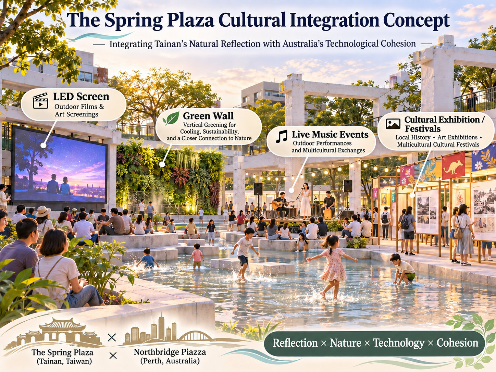
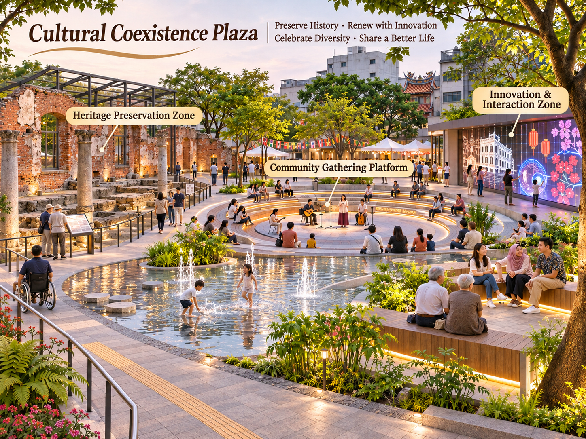

學生藍圖作品與發表影片實錄
直接檢視各組空間設計藍圖，並可點選藍圖上的編號節點，即時跳轉對應至下方「第四步：跨文化融合價值設計點」深度解析。




學生作品總體設計理念與文化基因萃取
從空間材質、尺度與使用儀式出發，先行提煉台灣與國際案例各自承載的核心文化價值。
兩國文化碰撞時的痛點剖析
當台灣與國際案例的空間基因交會時，各自極端化的傾向如何形成設計上的矛盾與使用門檻。
跨文化融合價值與空間設計點互動解碼
下方三大「跨文化融合價值」源自表四融合探究；點選任一實體「設計點」卡片（或上方藍圖標記），即可查看該設計如何精準化解兩國痛點。
| 設計點項目 | 對應跨文化融合價值 | 化解之價值矛盾（痛點） | 作品與報告原始佐證 |
|---|